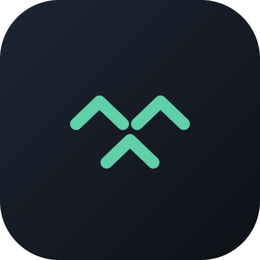

Get flock
Personal, non-commercial proof of concept for invited adults. Location is shared only when you choose.
Experimental preview. This is not a production safety service, an emergency tool, or a child-tracking product. Do not redistribute it to children or rely on it as your only safety plan.
Download flock for AndroidFree. Works on any Android 7+ phone, including GrapheneOS. No Google Play or Google account. flock connects to the relays and privacy services described in the Privacy Policy.
Install it (takes a minute)
- Open the downloaded file. Pull down your notifications and tap it.
- If your phone asks, allow your browser to install unknown apps. That is Android's normal question for any app that skips the app store. Why: flock is deliberately not in the Play Store, so no Google account or tracking is involved in getting it.
- When you first share in the app, choose location “Allow all the time”. Android takes you to Settings for this. Why: this lets live sharing continue while the phone is locked. flock starts private each time. It shares only after you deliberately tap Share; tap Go private to stop. Changing Android permission is a separate backstop.
- Allow the notification when asked. Why: Android requires a visible notice while an app watches location in the background. It only appears while sharing is on.
- GrapheneOS only: set Settings → Apps → flock → Battery → Unrestricted. Why: otherwise the system may quietly stop the watch to save power.
Updates: download the new file and install it over the top. Your circles and settings stay.
Verify your download (optional)
Compare the file's fingerprint with flock.apk.sha256:
sha256sum flock-*.apk
The two long strings should match exactly.
Why the app instead of the website?
The app can keep live sharing active in the background, including with the screen off. The website only shares while it is open.
There is no account and no sign-up. flock makes a pseudonymous key that lives only on your phone. Network providers may still see connection metadata; read the privacy policy for the full boundary. Reset the device copy whenever you need to.
Any phone, no install
Open flock.forgesworn.dev and add it to your home screen (iPhone: Share → Add to Home Screen). The web preview supports circle sharing, fixed coordination signals, the live map, and dropping shared pins with radar navigation to them — all while it is open.
Adults 18+ only. Do not install or use flock to track a child or anyone who has not freely agreed.
← Back to flock